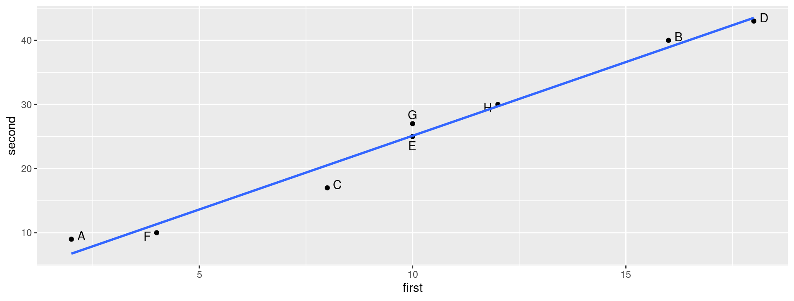
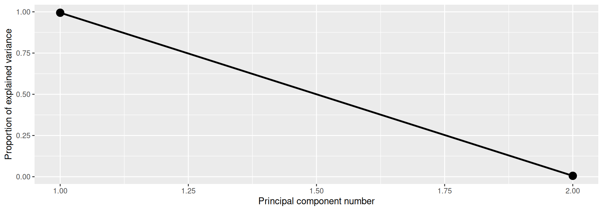
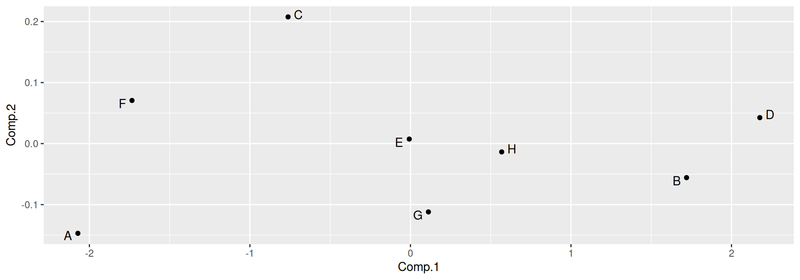
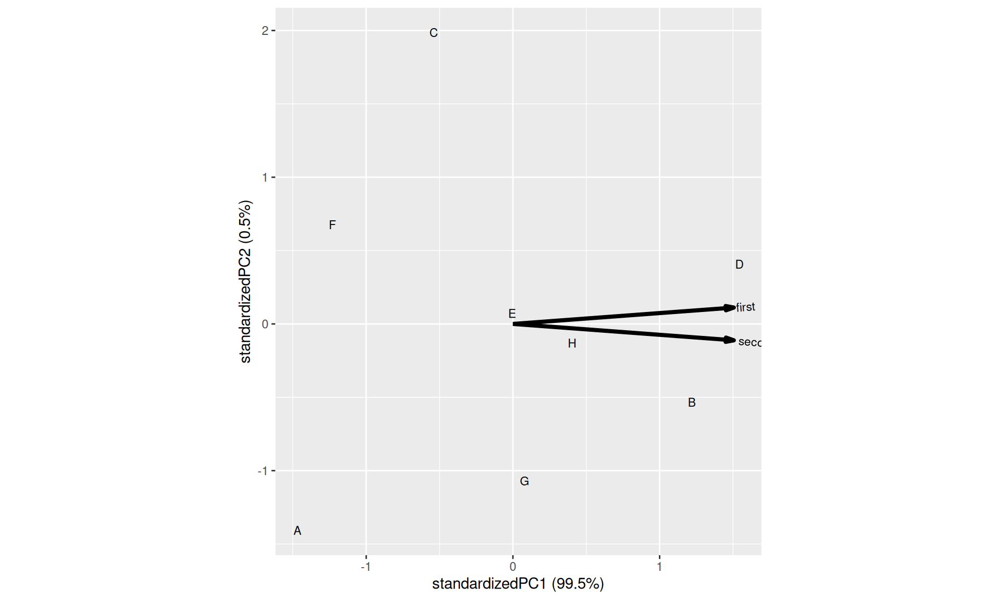
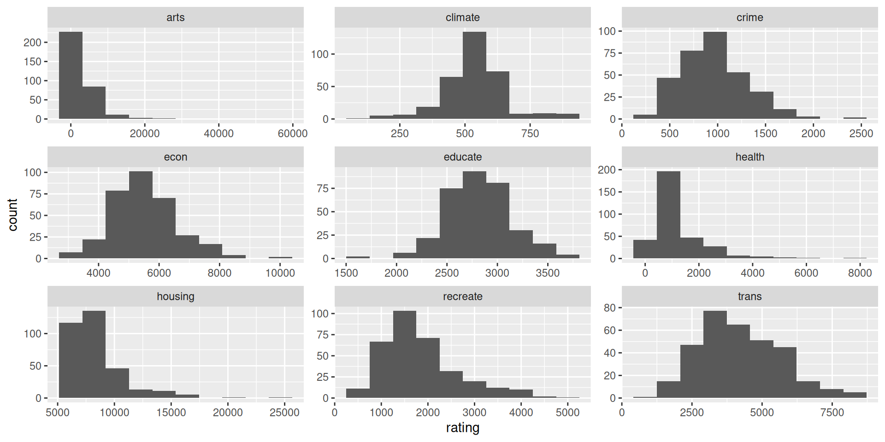
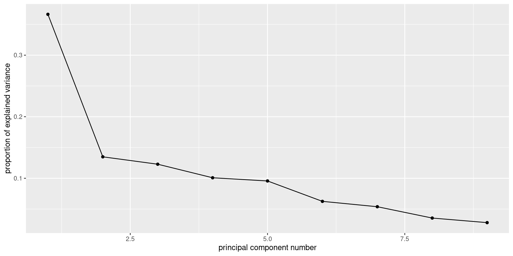
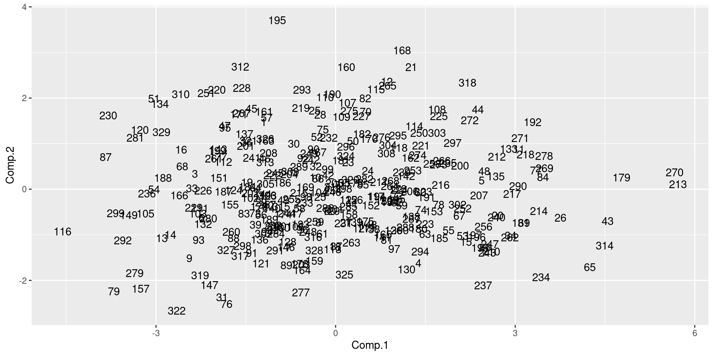
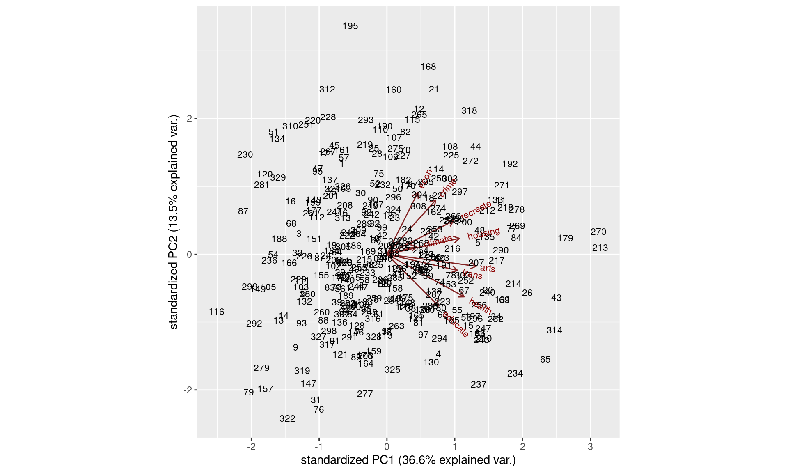
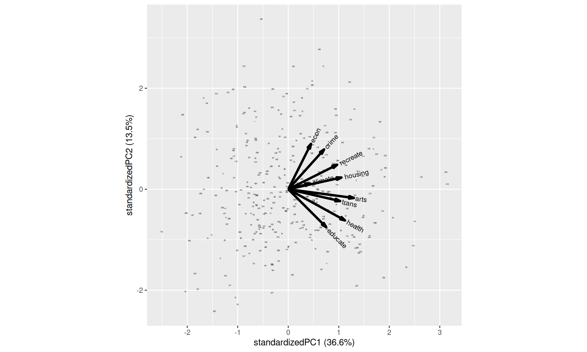

Principal components
Principal Components
Have measurements on (possibly large) number of variables on some individuals.
Question: can we describe data using fewer variables (because original variables correlated in some way)?
Look for direction (linear combination of original variables) in which values most spread out. This is first principal component.
Second principal component then direction uncorrelated with this in which values then most spread out. And so on.
Principal components
See whether small number of principal components captures most of variation in data.
Might try to interpret principal components.
If 2 components good, can make plot of data.
(Like discriminant analysis, but for individuals rather than groups.)
“What are important ways that these data vary?”
Packages
You might not have installed the first of these. See over for instructions.
ggbiplot has a special installation: see over.
Installing ggbiplot
ggbiplotnot on CRAN, so usualinstall.packageswill not work. This is same procedure you used forsmmrin C32:Install package
devtoolsfirst (once):
- Then install
ggbiplot(once):
Small example: 2 test scores for 8 people
# A tibble: 8 × 3
first second id
<dbl> <dbl> <chr>
1 2 9 A
2 16 40 B
3 8 17 C
4 18 43 D
5 10 25 E
6 4 10 F
7 10 27 G
8 12 30 H The plot
Principal component analysis
- Grab just the numeric columns:
- Strongly correlated, so data nearly 1-dimensional:
Finding principal components
- Make a score summarizing this one dimension. Like this:
Scree plot
Imagine scree plot continues at zero, so 2 components is a big elbow (take one component).
Component loadings
explain how each principal component depends on (standardized) original variables (test scores):
Loadings:
Comp.1 Comp.2
first 0.707 0.707
second 0.707 -0.707
Comp.1 Comp.2
SS loadings 1.0 1.0
Proportion Var 0.5 0.5
Cumulative Var 0.5 1.0First component basically sum of (standardized) test scores. That is, person tends to score similarly on two tests, and a composite score would summarize performance.
Component scores
first second id Comp.1 Comp.2
1 2 9 A -2.071819003 -0.146981782
2 16 40 B 1.719862811 -0.055762223
3 8 17 C -0.762289708 0.207589512
4 18 43 D 2.176267535 0.042533250
5 10 25 E -0.007460609 0.007460609
6 4 10 F -1.734784030 0.070683441
7 10 27 G 0.111909141 -0.111909141
8 12 30 H 0.568313864 -0.013613668Person A is a low scorer, very negative
comp.1score.Person D is high scorer, high positive
comp.1score.Person E average scorer, near-zero
comp.1score.comp.2says basically nothing.
Plot of scores
Comments
Vertical scale exaggerates importance of
comp.2.Fix up to get axes on same scale:
- Shows how exam scores really spread out along one dimension:
The biplot
Plotting variables and individuals on one plot.
Shows how components and original variables related.
Shows how individuals score on each component, and therefore suggests how they score on each variable.
Add
labelsoption to identify individuals:
The biplot
Comments
Variables point almost same direction (right). Thus very positive value on
comp.1goes with high scores on both tests, and test scores highly correlated.Position of individuals on plot according to scores on principal components, implies values on original variables. Eg.:
D very positive on
comp.1, high scorer on both tests.A and F very negative on
comp.1, poor scorers on both tests.C positive on
comp.2, high score on first test relative to second.A negative on
comp.2, high score on second test relative to first.
Places rated
Every year, a new edition of the Places Rated Almanac is produced. This rates a large number (in our data 329) of American cities on a number of different criteria, to help people find the ideal place for them to live (based on what are important criteria for them).
The data for one year are in http://ritsokiguess.site/datafiles/places.txt. The data columns are aligned but the column headings are not.
The criteria
There are nine of them:
climate: a higher value means that the weather is betterhousing: a higher value means that there is more good housing or a greater choice of different types of housinghealth: higher means better healthcare facilitiescrime: higher means more crime (bad)trans: higher means better transportation (this being the US, probably more roads)educate: higher means better educational facilities, schools, colleges etc.arts: higher means better access to the arts (theatre, music etc)recreate: higher means better access to recreational facilitiesecon: higher means a better economy (more jobs, spending power etc)
Each city also has a numbered id.
Read in the data
Look at distributions of everything
The histograms
Transformations
Several of these variables have long right tails
Take logs of everything but id:
Just the numerical columns
- get rid of the id column
Principal components
Importance of components:
Comp.1 Comp.2 Comp.3 Comp.4 Comp.5
Standard deviation 1.8159827 1.1016178 1.0514418 0.9525124 0.92770076
Proportion of Variance 0.3664214 0.1348402 0.1228367 0.1008089 0.09562541
Cumulative Proportion 0.3664214 0.5012617 0.6240983 0.7249072 0.82053259
Comp.6 Comp.7 Comp.8 Comp.9
Standard deviation 0.74979050 0.69557215 0.56397886 0.50112689
Proportion of Variance 0.06246509 0.05375785 0.03534135 0.02790313
Cumulative Proportion 0.88299767 0.93675552 0.97209687 1.00000000scree plot
- big elbow at 2 (1 component); smaller elbow at 6 (5) and maybe 4 (3).
What is in each component?
Loadings:
Comp.1 Comp.2 Comp.3 Comp.4 Comp.5 Comp.6 Comp.7
climate 0.158 0.800 0.377 0.217 0.151
housing 0.384 0.139 0.197 -0.580 0.275
health 0.410 -0.372 0.113 -0.535 -0.135
crime 0.259 0.474 0.128 0.692 -0.140 -0.110
trans 0.375 -0.141 -0.141 -0.430 0.191 0.324 0.679
educate 0.274 -0.452 -0.241 0.457 0.225 0.527 -0.262
arts 0.474 -0.104 -0.147 -0.321 -0.120
recreate 0.353 0.292 -0.404 -0.306 0.394 -0.553
econ 0.164 0.540 -0.507 0.476 0.147
Comp.8 Comp.9
climate 0.341
housing -0.606
health 0.150 0.594
crime -0.420
trans 0.119 0.136
educate -0.211 -0.110
arts 0.260 -0.747
recreate 0.138 0.226
econ 0.415
Comp.1 Comp.2 Comp.3 Comp.4 Comp.5 Comp.6
SS loadings 1.000 1.000 1.000 1.000 1.000 1.000
Proportion Var 0.111 0.111 0.111 0.111 0.111 0.111
Cumulative Var 0.111 0.222 0.333 0.444 0.556 0.667
Comp.7 Comp.8 Comp.9
SS loadings 1.000 1.000 1.000
Proportion Var 0.111 0.111 0.111
Cumulative Var 0.778 0.889 1.000Assessing the components
Look at component loadings and make a call about “large” (in absolute value) vs “small”. Large loadings are a part of the component and small ones are not. Thus, if we use 0.4 as cutoff:
- component #1 depends on health and arts
- #2 depends on economy and crime, and negatively on education.
- #3 depends on climate, and negatively on economy.
- #4 depends on education and the economy, negatively on transportation and recreation opportunities.
- #5 depends on crime and negatively on housing.
Comments
The use of 0.4 is arbitrary; you can use whatever you like. It can be difficult to decide whether a variable is “in” or “out”.
The large (far from zero) loadings indicate what distinguishes the cities as places to live, for example:
- places that are rated high for health also tend to be rated high for arts
- places that have a good economy tend to have a bad climate (and vice versa)
- places that have a lot of crime tend to have bad housing.
Making a plot 1/3
How can we make a visual showing the cities? We need a “score” for each city on each component, and we need to identify the cities (we have a numerical id in the original dataset):
The as_tibble is needed at the end because the scores are a matrix.
Making a plot 2/3
- Plot the first two scores against each other, labelling each point by the
idof the city it belongs to:
Making a plot 3/3
Comments
Cities 213 and 270 are high on component 1, and city 116 is low. City 195 is high on component 2, and city 322 is low.
This suggests that cities 213 and 270 are high on health and arts, and city 116 is low. City 195 should be high on economy and crime and low on education, and city 322 should be the other way around.
Checking this 1/2
- The obvious way of checking this is in two steps: first, work out what high or low means for each variable:
climate housing health crime
Min. :4.654 Min. : 8.548 Min. :3.761 Min. :5.730
1st Qu.:6.174 1st Qu.: 8.819 1st Qu.:6.368 1st Qu.:6.561
Median :6.295 Median : 8.972 Median :6.725 Median :6.853
Mean :6.260 Mean : 8.997 Mean :6.805 Mean :6.796
3rd Qu.:6.384 3rd Qu.: 9.107 3rd Qu.:7.276 3rd Qu.:7.053
Max. :6.813 Max. :10.071 Max. :8.968 Max. :7.823
trans educate arts recreate
Min. :7.043 Min. :7.439 Min. : 3.951 Min. :5.704
1st Qu.:8.052 1st Qu.:7.871 1st Qu.: 6.657 1st Qu.:7.182
Median :8.314 Median :7.935 Median : 7.534 Median :7.421
Mean :8.283 Mean :7.936 Mean : 7.383 Mean :7.429
3rd Qu.:8.557 3rd Qu.:8.010 3rd Qu.: 8.254 3rd Qu.:7.685
Max. :9.062 Max. :8.238 Max. :10.946 Max. :8.476
econ id
Min. :8.021 Min. : 1
1st Qu.:8.485 1st Qu.: 83
Median :8.591 Median :165
Mean :8.598 Mean :165
3rd Qu.:8.718 3rd Qu.:247
Max. :9.208 Max. :329 Checking this 2/2
and then find the values on the variables of interest for our cities of interest, and see where they sit on here.
Cities 270, 213, and 116 were extreme on component 1, which depended mainly on health and arts:
# A tibble: 3 × 3
id health arts
<dbl> <dbl> <dbl>
1 166 6.14 5.01
2 213 8.97 10.9
3 270 8.22 9.56City 166 is near or below Q1 on both variables. City 213 is the highest of all on both health and arts, while city 270 is well above Q3 on both.
Checking component 2
- Component 2 depended positively on economy and crime and negatively on education. City 195 was high and 322 was low:
# A tibble: 2 × 4
id econ crime educate
<dbl> <dbl> <dbl> <dbl>
1 195 9.21 7.06 7.79
2 322 8.10 6.14 7.97- City 195 is the highest on economy, just above Q3 on crime, and below Q1 on education. City 322 should be the other way around: nearly the lowest on economy, below Q1 on crime, and between the median and Q3 on education. This is as we’d expect.
A better way: percentile ranks
It is a lot of work to find the value of each city on each variable in the data summary.
A better way is to work out the percentile ranks of each city on each variable and then look at those:
Look up cities and variables again
# A tibble: 3 × 3
id health arts
<dbl> <dbl> <dbl>
1 166 0.152 0.0488
2 213 1 1
3 270 0.970 0.982 This shows that city 270 was also really high on these two variables: in the 97th percentile for health and the 98th for arts.
Component 2
- What about the extreme cities on component 2?
# A tibble: 2 × 4
id econ crime educate
<dbl> <dbl> <dbl> <dbl>
1 195 1 0.762 0.0884
2 322 0.00610 0.0732 0.631 City 322 was really low on economy and crime, but only just above average on education. City 195 was the highest on economy and really low on education, but only somewhat high on crime (76th percentile).
This, as you see, is much easier once you have set it up.
The biplot
Comments
- This is hard to read!
- There are a lot of cities that overshadow the red arrows for the variables.
- reduce the size of the city labels
Biplot, attempt 2
Comments on attempt #2
- Now at least can see the variables
- All of them point somewhat right (all belong partly to component 1)
- Some of them (economy, crime, education) point up/down, belong to component 2 as well.
- In this case, cannot really see both observations (cities) and variables (criteria) together, which defeats the purpose of the biplot.
- Have to try it and see.
Principal components from correlation matrix
Create data file like this:
1 0.9705 -0.9600
0.9705 1 -0.9980
-0.9600 -0.9980 1and read in like this:
Pre-processing
A little pre-processing required:
Turn into matrix (from data frame)
Feed into
princompascovmat=
Scree plot: one component fine

Component loadings
Compare correlation matrix:
with component loadings
Comments
When X1 large, X2 also large, X3 small.
- Then
comp.1positive.
- Then
When X1 small, X2 small, X3 large.
- Then
comp.1negative.
- Then
No scores
With correlation matrix rather than data, no component scores
So no principal component plot
and no biplot.
Comments
“Standard deviation” shows relative importance of components (as for LDs in discriminant analysis)
Here, first one explains almost all (99.4%) of variability.
That is, look only at first component and ignore second.
cor=TRUEstandardizes all variables first. Usually wanted, because variables measured on different scales. (Only omit if variables measured on same scale and expect similar variability.)